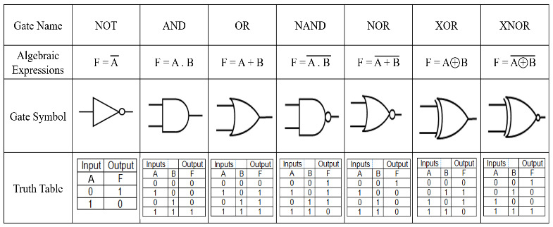

El objetivo final va a ser una aplicación que posea las compuertas lógicas existentes para poder crear uno o una serie de circuitos, cada uno con su entrada/salida.
En esta primera entrega se va a desarrollar únicamente las tablas de verdad que genera cada compuerta lógica para ajustarse al enunciado.
Para empezar, ejecutar en la consola del navegador start()
Funcionalidades a desarrollar que van surgiendo:
